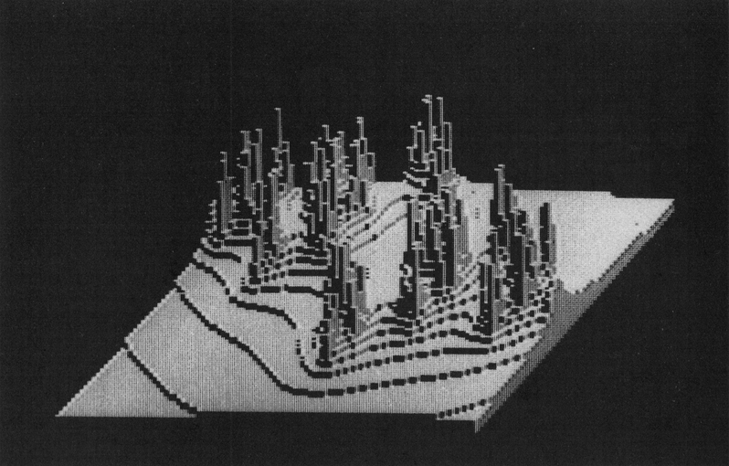
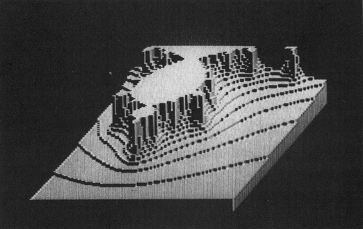

Apfelberge
Apfelmännchen sind nicht nur als Ebene darstellbar. Zeichnen Sie sie mit dreidimensionalen Effekten und in räumlicher Tiefe. Die Grafiken sehen aus wie Hochhaus- oder Gebirgs-Landschaften.

Vergleichen Sie das nebenstehende Bild mit einem Apfelmännchen aus Ausgabe 11/85, wird Ihnen die dem Programm zugrunde liegende Idee sofort auffallen. Die Anzahl der Iterationen bestimmt nun nicht mehr einen Farbwert, vielmehr stellt sie die Höhe eines Punktes über der Ebene dar. Die Höhe wird als Balken gezeichnet. Dabei besteht jeder Balken aus einer dunklen Vorderseite, einer etwas helleren rechten Seite und einer hellen Oberseite. Da diese Balken von links nach rechts und von hinten nach vorne aneinandergefügt werden, benötigt das Programm keinen Algorithmus zur Berechnung verdeckter Linien.
Das Programm »FRACTALBERGE« (siehe Listing 1) ist für Simons Basic geschrieben. Benötigt werden jedoch nur die Befehle zum Einschalten der Grafik und zum Zeichnen der Linien. Die das Bild bestimmenden Parameter sind in den Zeilen 5 bis 7 enthalten (Listing 2) und gliedern sich wie folgt.
| Zeile 5: | Festlegen der Farben, Gesamtgröße des Bildes |
| Zeile 6: | Komplexe Parameter, Maximale Anzahl der Iterationen, maximale Höhe der Balken |
| Zeile 7: | Ausschnitt des Bildes festlegen |
Es wird immer ein rechteckförmiger Ausschnitt der Fractalebene dargestellt (Bild 1). Die Parallel-Perspektive entsteht durch das Verschieben jeder Zeile gegenüber der vorhergehenden um einen halben Bildpunkt nach links. Die Laufzeit beträgt im Durchschnitt über eine Stunde und ist je nach Bild nach oben beliebig offen.
(G.Paret/og)